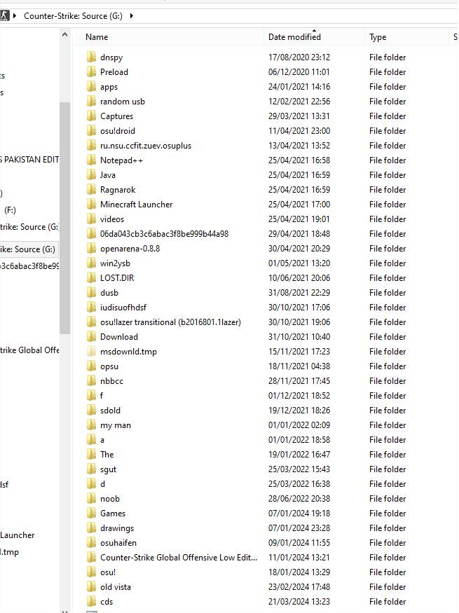

Old Hard Drive Recovery
On 29/03/2024
Hi, so now I've been trying to find old stuff I could put on the website, and recently I found this external TOSHIBA HDD with a big lot of files.
I remember getting it in 2020, Because my laptop was running out of storage, but it contains files from before then too.
One problem, like a dumbass I never give proper names to my folders/files, so it's pretty hard to find what is what as there is 38 folders with 377 Subfolders and maybe even more inside.
So yeah, wish me luck haha.
